Pre-Design Thinking
Pills2Me is a startup that aims to deliver medicine from pharmacies to you. We are designing a prototype for mobile.
Users impacted by interface:
- Patients with prescriptions but with impaired mobility
- Patients/Consumers with prescriptions that are unwell or have limited time to pick up medication
- Pharmacists with stocking up orders for pickup
- family/friends of patients, first responders, or caregivers that can help them order their medication.
- Drivers who do delivery of medication
The interface aims to provide a simple and convenient method for ordering and schedule their medication delivery to home when the patient is free to receive it.
Sketching
Person 1’s Design:
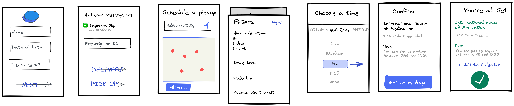Person 2’s Design:
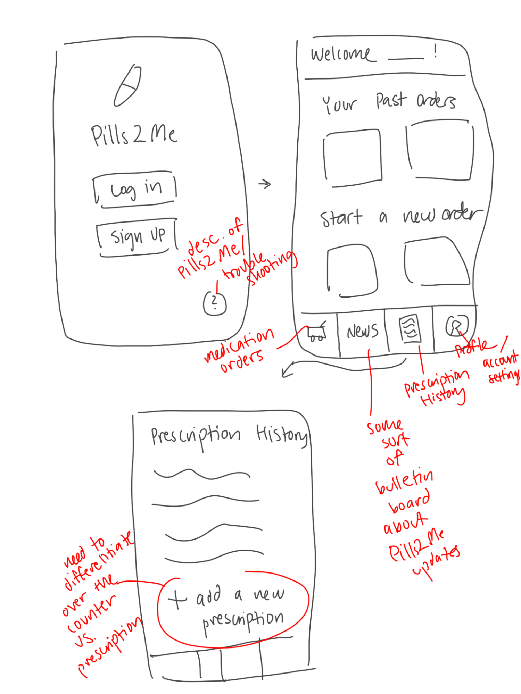Person 3’s Design:
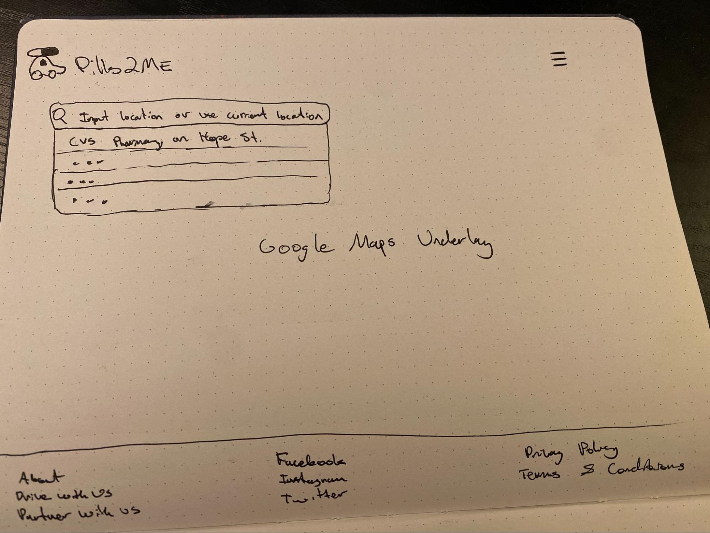 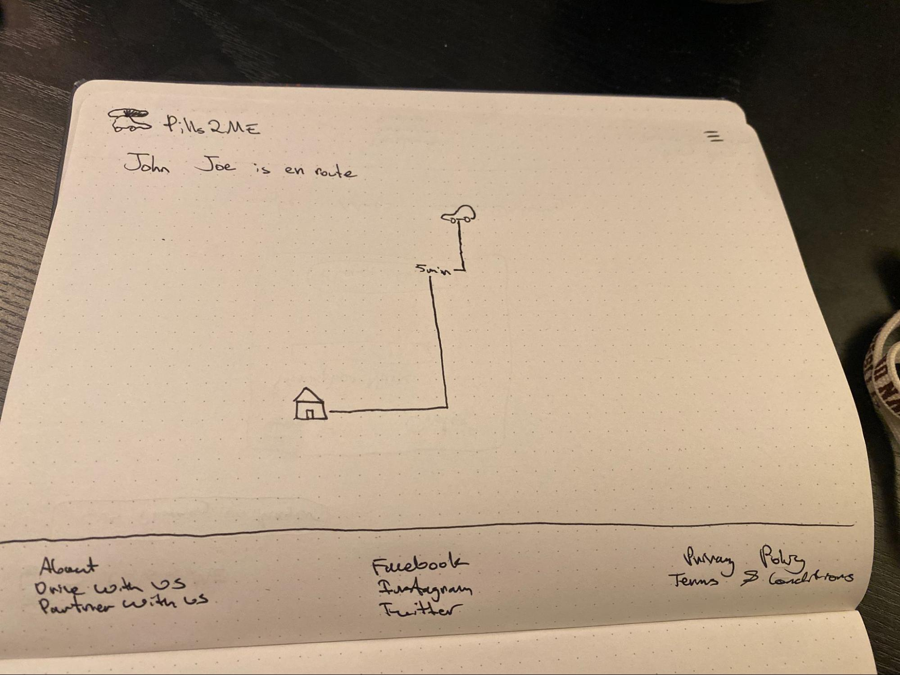Person 4’s Design:
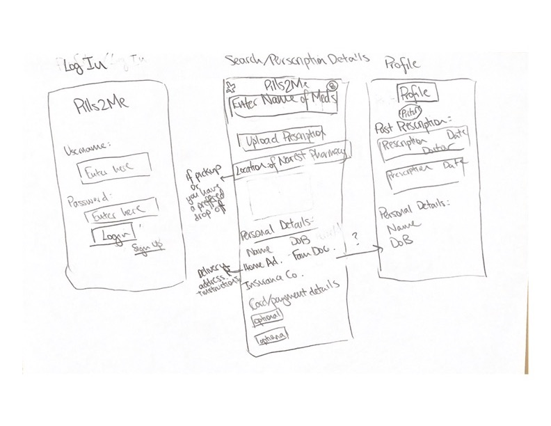Combining Ideas into a Wireframe
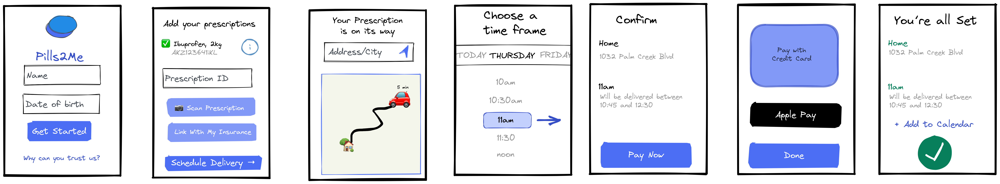Interactive High Fidelity Mockup
See the Figma file for our final design after crit or play through the mockup.
This was our design before crit:
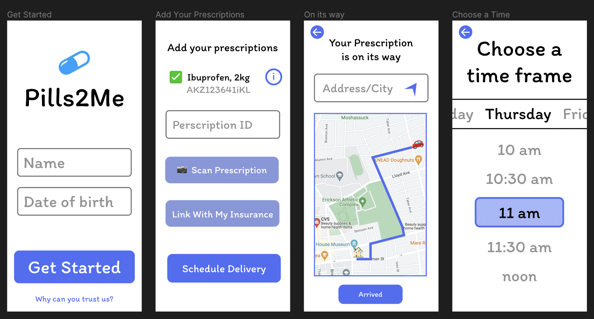 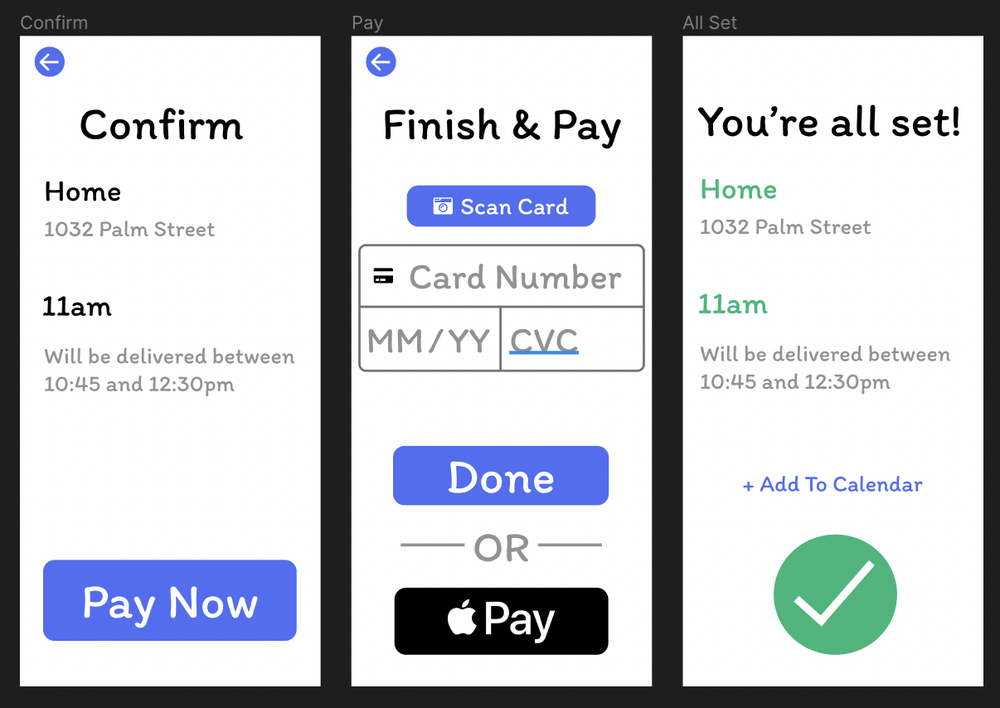Mockup Crit in Studio
- the “pick a delivery location” screen → lack of ability to set screen and special instructions
- the time/date picker felt too bespoke/confusing
- No past history of medication ordered
- unclear what to do next after “you’re all set”
- font and language don’t feel right for an app you’re putting private medical info into
- Lack of error handling (ie: contacting the driver if something goes wrong)
This was our design after crit:
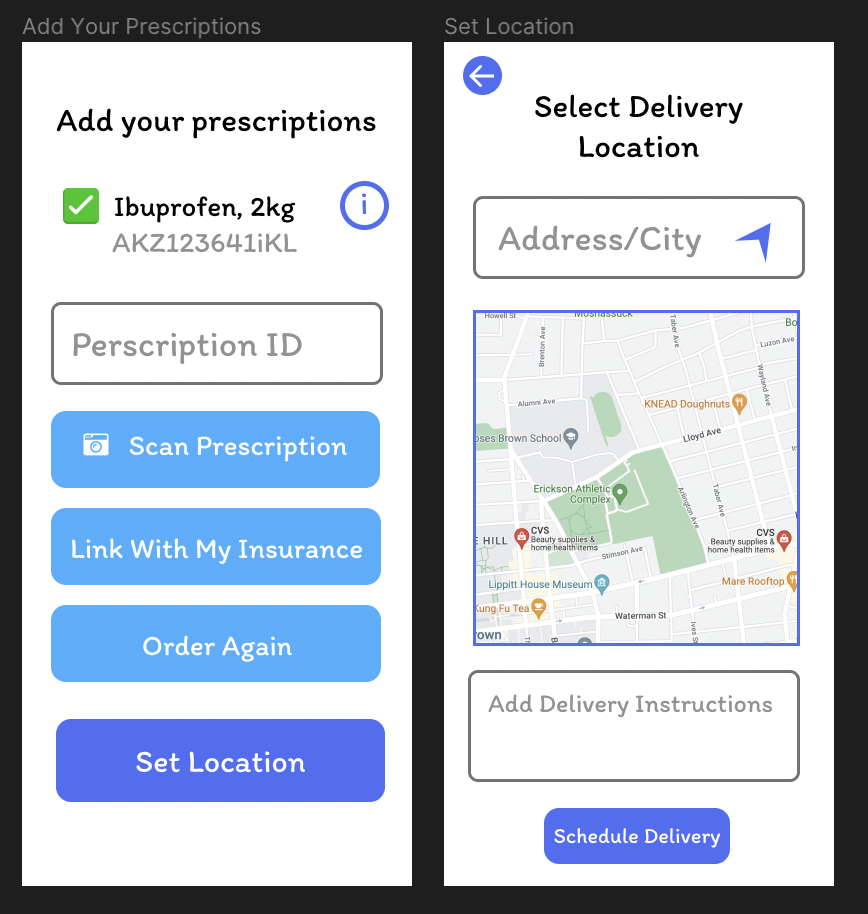 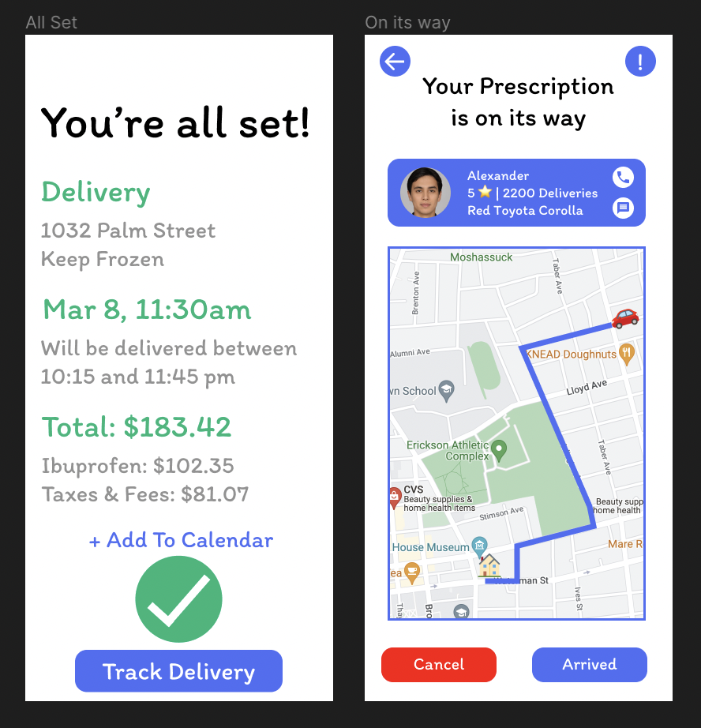 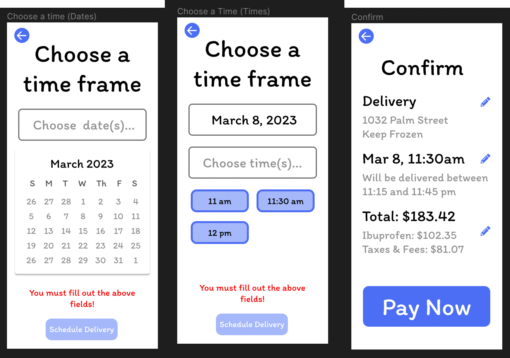 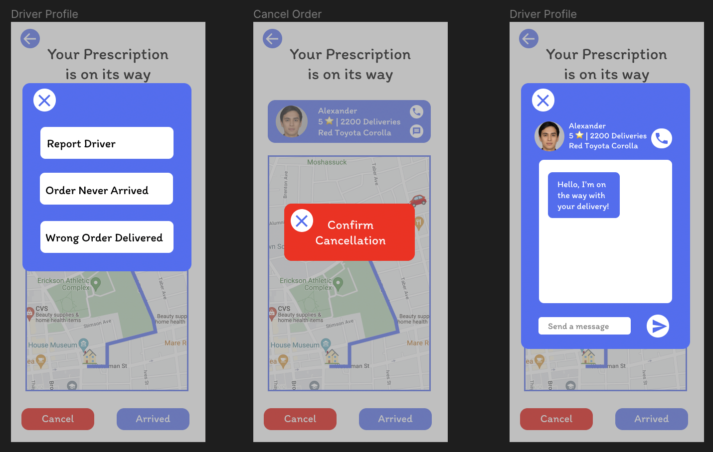Determine a Task
Overall Task Description: You are provided a prototype of a model app for our startup Pills2Me. Your instructions are to order ibuprofen medicine and set up delivery to your home (1032 Palm Street), with delivery instructions to keep cold, and to select delivery time of March 8th for 11:30am, then track your delivery. Please think out loud!
SubTask 1: Were you able to set the delivery address (1032 Palm Street)?
SubTask 2: Were you able to set the date for March 8th for 11:30am?
SubTask 3: Were you able to track your delivery and contact your driver?
Post Questions:
- What frustrated you most about this site?
- If you had a magic wand, how would you improve this site?
- What did you like about the site?
- How likely are you to recommend this site to a friend or colleague (0=Not at all likely, and 10=Very likely)?
Feedback & Analysis
Videos: User A, User B, User C
Summery of feedback and observations from videos:
- Likes the flow of information/options, and overall user friendly and intuitive.
- Users were confused with the auto populated address/delivery instructions when interacting with the set address screen.
- Would be nice to have an expected time of arrival/how much more time on the track delivery screen.
- Some suggested that we go with a different color and font scheme.
- Average of 8/10 for recommending for other users to use.